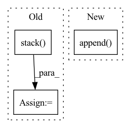

Pattern ID :939
Before Change
// Back to batch first
attn_scores = torch.stack(attn_scores).transpose(0, 1)
mel_outputs = torch.stack( mel_outputs) .transpose(0, 1).contiguous()
stop_tokens = torch.stack(stop_tokens).transpose(0, 1).squeeze(2)
// (B, T", mel_dim*r) -> (B, T, mel_dim)
mel_outputs = mel_outputs.reshape(B, -1, self.mel_dim)
return mel_outputs, stop_tokens, attn_scores
After Change
// Store predictions
mel_outputs.append(output)
attn_scores.append( attention_score.unsqueeze(1))
stop_tokens.extend([stop] * self.r)
if greedy:
if stop > self.stop_threshold:In pattern: SUPERPATTERN
Frequency: 3
Non-data size: 3
Instances Fragment ID: 2862728
Project Name: thuhcsi/tacotron
Commit Name: fea9ec535ec373aad564646f4f292fbee0217c29
Time: 2021-03-18
Author: johnson.tsing@gmail.com
File Name: model/tacotron.py
M Class Name: Decoder
N Class Name: Decoder
M Method Name: forward(4)
N Method Name: forward(4)
M Parent Class: nn.Module
N Parent Class: nn.Module
M File Name: model/tacotron.py
N File Name: model/tacotron.py
M Start Line: 87
M End Line: 187
N Start Line: 88
N End Line: 180
Before Change
normed_embed = embed_norm(embed)
normed_embeds.append(normed_embed)
normed_embeds = torch.stack( normed_embeds, dim = -2)
normed_ngram_embeds = torch.stack(normed_ngram_embeds, dim = -2)
if self.concat_ngrams:
input_sliced_dim = normed_embeds.shape[-1] - normed_ngram_embeds.shape[-1]After Change
ngram_ids_for_head = multi_way_hash_ids(ngram_ids, head_num + 1, head_num + 1, prime, vocab_size)
ngram_embed = ngram_emb(ngram_ids_for_head)
ngram_embeds.append( ngram_embed)
embeds = rearrange(embeds, "b n (h d) -> b n h d", h = num_heads)
normed_embeds = self.embeds_layernorm(embeds)
Fragment ID: 2862713
Project Name: lucidrains/n-grammer-pytorch
Commit Name: d8d421956f3d05e96bfe5314c1e6ea16669e5d52
Time: 2021-12-03
Author: lucidrains@gmail.com
File Name: n_grammer_pytorch/n_grammer_pytorch.py
M Class Name: Ngrammer
N Class Name: Ngrammer
M Method Name: forward(5)
N Method Name: forward(5)
M Parent Class: nn.Module
N Parent Class: nn.Module
M File Name: n_grammer_pytorch/n_grammer_pytorch.py
N File Name: n_grammer_pytorch/n_grammer_pytorch.py
M Start Line: 150
M End Line: 167
N Start Line: 162
N End Line: 175
Before Change
// Back to batch first
attn_scores = torch.stack(attn_scores).transpose(0, 1)
mel_outputs = torch.stack( mel_outputs) .transpose(0, 1).contiguous()
stop_tokens = torch.stack(stop_tokens).transpose(0, 1).squeeze(2)
// (B, T", mel_dim*r) -> (B, T, mel_dim)
mel_outputs = mel_outputs.reshape(B, -1, self.mel_dim)
return mel_outputs, stop_tokens, attn_scores
After Change
// Store predictions
mel_outputs.append(output)
attn_scores.append( attention_score.unsqueeze(1))
stop_tokens.extend([stop] * self.r)
if greedy:
if stop > self.stop_threshold: Fragment ID: 2862723
Project Name: thuhcsi/tacotron
Commit Name: fea9ec535ec373aad564646f4f292fbee0217c29
Time: 2021-03-18
Author: johnson.tsing@gmail.com
File Name: model/tacotron2.py
M Class Name: Decoder
N Class Name: Decoder
M Method Name: forward(4)
N Method Name: forward(4)
M Parent Class: nn.Module
N Parent Class: nn.Module
M File Name: model/tacotron2.py
N File Name: model/tacotron2.py
M Start Line: 127
M End Line: 224
N Start Line: 127
N End Line: 216